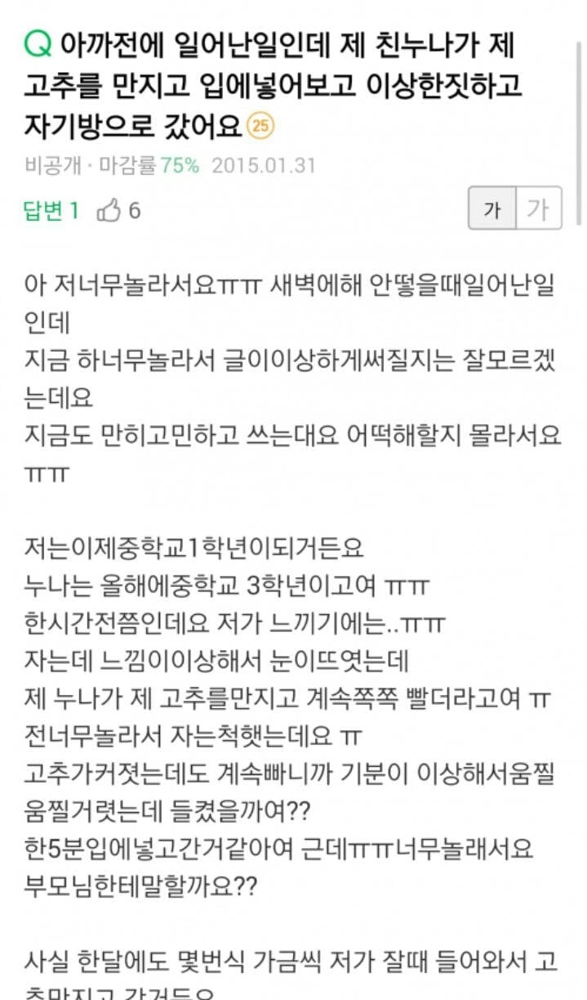
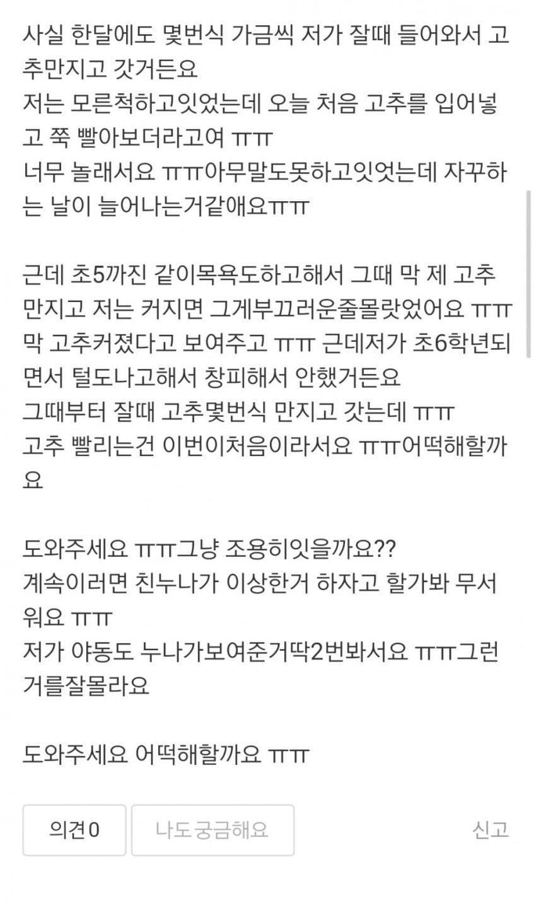
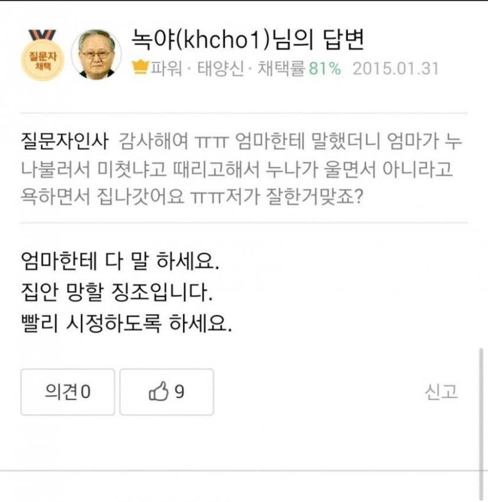

아 누선족이 진짜 좋은 건데...



아 누선족이 진짜 좋은 건데...
집 안망할 징조입니다
엄마한테 하세요
이 엄산당 놈들 .. !!
똑같은 생각한 사람 많나보네


결국 해주는 누나 시리즈는 ㅇㅈ이지
핫바할아버지 간만에 보네 ㅠ ㅠ
나 중1땐 학교에서 야동틀고놀았는데
난 그런 애들 밀고해서 선생님들 사이에서 두터운 신임을 얻음
씨이이바넘아ㅏㅏ
닉값하는거보소
녹야센세...
좋은건데...
할아버지 올해 돌아가셨네
어흐
녹야선생님 얄짤없네
누나는 선넘었지 여동생이면 모를까
여동생이면 바~로 머리 쥐어잡고 헛둘헛둘
빨리 사정하도록 하세요